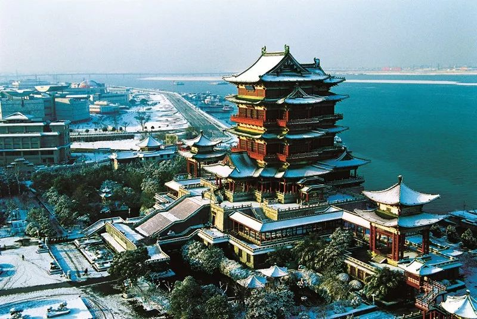
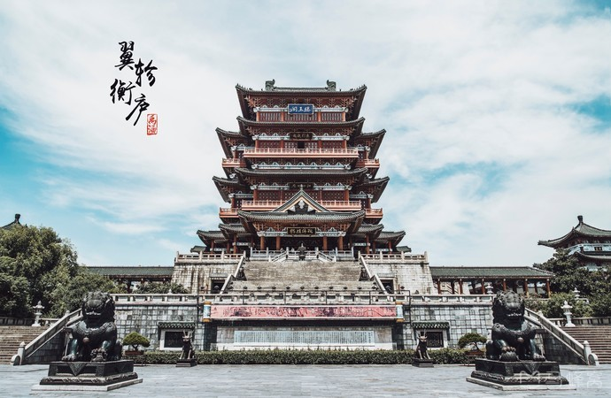
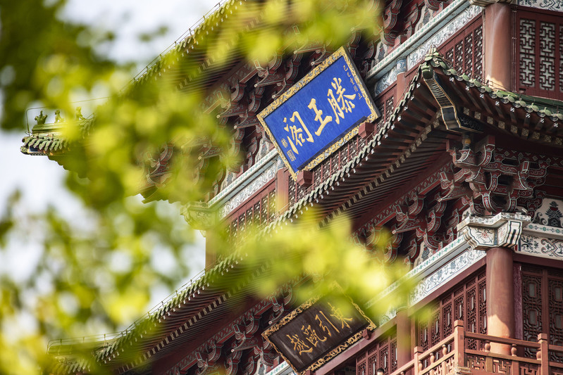

 简介
简介
brief introduction
滕王阁，江南三大名楼之一，位于江西省南昌市西北部沿江路赣江东岸，始建于唐朝永徽四年，因唐太宗李世民之弟——李元婴始建而得名，因初唐诗人王勃诗句“落霞与孤鹜齐飞，秋水共长天一色”而流芳后世。
贞观年间，唐高祖李渊之子、唐太宗李世民之弟李元婴曾被封于山东滕州故为滕王，且于滕州筑一阁楼名以“滕王阁”（已被毁），后滕王李元婴调任江南洪州（今江西南昌），因思念故地滕州修筑了著名的“滕王阁”，此阁因王勃一首《滕王阁序》为后人熟知，成为永世的经典。滕王阁与湖北武汉黄鹤楼、湖南岳阳楼并称为“江南三大名楼”。历史上的滕王阁先后共重建达 29 次之多，屡毁屡建。
2001 年元月核准为首批国家 AAAA 级旅游景区。
2018 年 10 月 29 日，文化和旅游部在北京举办新晋 5A 级旅游景区授牌会，滕王阁旅游区正式跻身国家 5A 级旅游景区行列。
贞观年间，唐高祖李渊之子、唐太宗李世民之弟李元婴曾被封于山东滕州故为滕王，且于滕州筑一阁楼名以“滕王阁”（已被毁），后滕王李元婴调任江南洪州（今江西南昌），因思念故地滕州修筑了著名的“滕王阁”，此阁因王勃一首《滕王阁序》为后人熟知，成为永世的经典。滕王阁与湖北武汉黄鹤楼、湖南岳阳楼并称为“江南三大名楼”。历史上的滕王阁先后共重建达 29 次之多，屡毁屡建。
2001 年元月核准为首批国家 AAAA 级旅游景区。
2018 年 10 月 29 日，文化和旅游部在北京举办新晋 5A 级旅游景区授牌会，滕王阁旅游区正式跻身国家 5A 级旅游景区行列。

重要事件
major issues
遭灾
自清世祖顺治五年（公元 1648 年）至宣统元年（公元 1909 年）的 260 年间，兴废频繁达十三次之多。其中毁于火灾七次，遭兵燹两次，自然损坏而倾圮四次。每次重修均不如唐、宋、元、明四代，建筑规模均低下，采用一些民间的作法。晚清之阁有照片可考。
建筑特色：木结构，歇山重檐，黑瓦木柱，无彩绘。有牌坊式的入阁正门，颇似南方寺观。共两层，尺寸不详。
兴废
兴废达七次，建筑规模均低于前朝。据记载，嘉靖六年（公元 1527 年）所建较雄伟。建筑形式继承了宋、元之风。据明代绘画考证，屋顶有所变化，为盔顶式。
建筑特色：共二层。长：7 丈 4 尺（23.014 米），阔：7 丈 4 尺（23.014 米），高：4 丈 2 尺（13.062 米）
修建
建于城墙之上，其修建可考者，有元世至元三十一年（公元 1294 年）及元顺帝元统二年（公元 1334 年）两次。
建筑形式：似宋阁，据元代绘画考证，较宋阁高大，长阔略逊。长：8 丈 8 尺（27.034 米），阔：约 9 丈（28 米），高：4 丈 4 尺